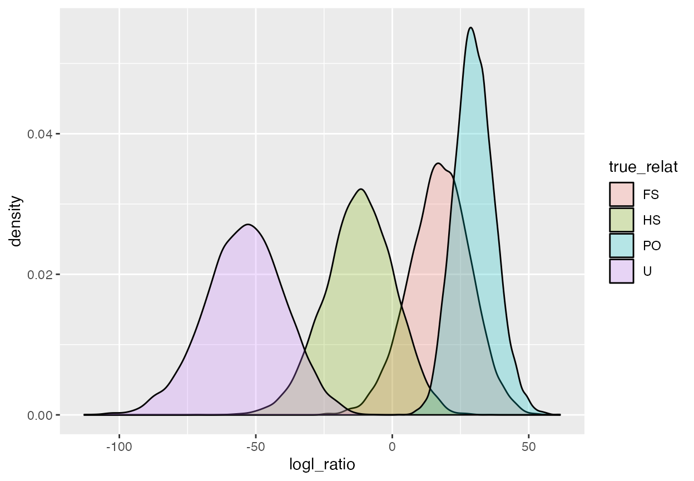
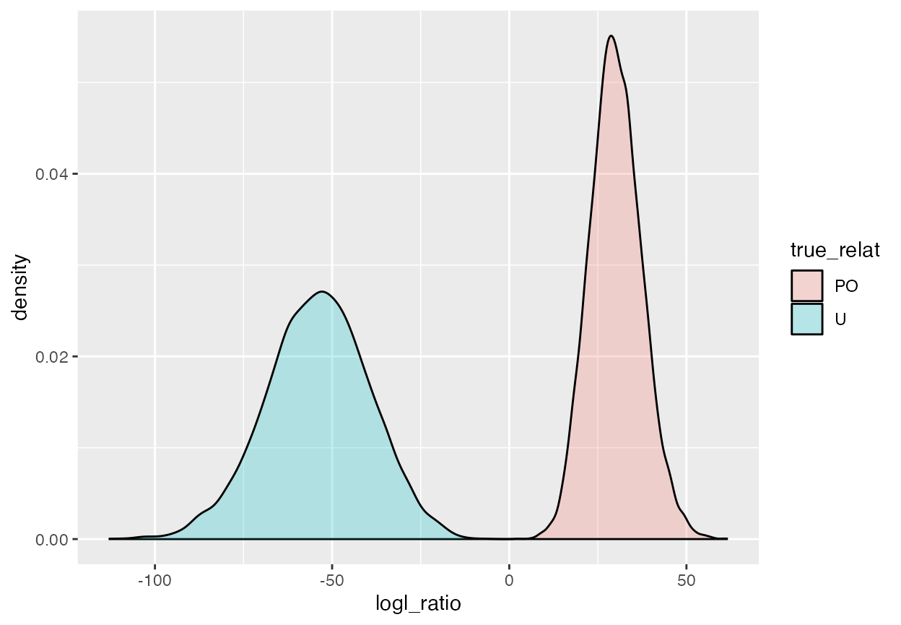
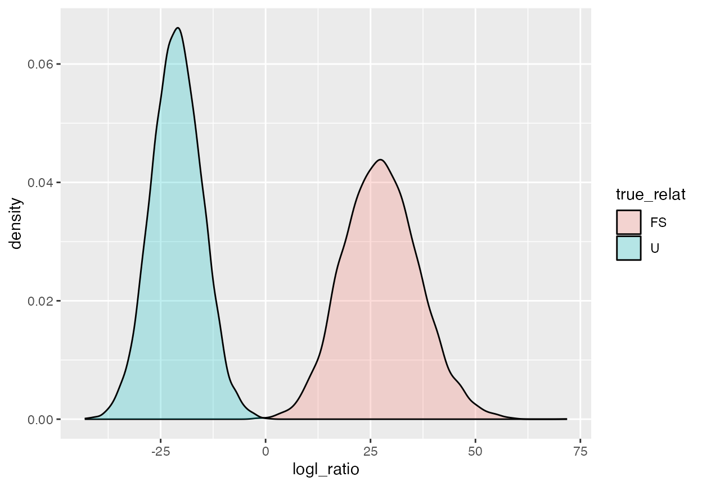

CKMRsim-example-1.RmdIn this example, we will work through a relatively complete analysis of data from kelp rockfish. These data have been used in two publications to date (Baetscher et al. 2019, 2018). The genotype data are included in the package as a gzip compressed csv file. The contents are identical to what can be downloaded from Dryad at: http://datadryad.org/bitstream/handle/10255/dryad.205630/kelp_genos_used_two_col.csv?sequence=1.
Before we get started let’s load the packages we need. We’ll be using a lot of functions from the tidyverse, so let’s do it.
library(tidyverse)
#> ── Attaching core tidyverse packages ──────────────────────── tidyverse 2.0.0 ──
#> ✔ dplyr 1.1.2 ✔ readr 2.1.4
#> ✔ forcats 1.0.0 ✔ stringr 1.5.0
#> ✔ ggplot2 3.4.3 ✔ tibble 3.2.1
#> ✔ lubridate 1.9.2 ✔ tidyr 1.3.0
#> ✔ purrr 1.0.2
#> ── Conflicts ────────────────────────────────────────── tidyverse_conflicts() ──
#> ✖ dplyr::filter() masks stats::filter()
#> ✖ dplyr::lag() masks stats::lag()
#> ℹ Use the conflicted package (<http://conflicted.r-lib.org/>) to force all conflicts to become errors
library(CKMRsim)We first must read in the genotypes of the individuals. This file holds genotypes of all the adults and all of the juveniles. The first part of our analysis involves simulations using allele frequencies. Since we don’t expect large full sibling groups in our data, it is reasonable to use both adults and juveniles, together, to estimate allele frequencies in this kelp rockfish population.
It is also worth noting that, in general, it is important to include most/all of the individuals you will be using in your CKMR study when estimating allele frequencies. This is because all alleles that you might encounter when doing kin-finding must have been accounted for and must have allele frequencies computed for them. Especially when using multiallelic markers like microhaplotypes or microsatellites, it is important to make sure that every allele that you might encounter during kin-finding is accounted for during the allele frequency and power estimation phases of the analysis.
The file that holds the genotypes comes with the CKMRsim
package at:
geno_path <- system.file("extdata/kelp_genos_used_two_col.csv.gz", package = "CKMRsim")When we read that in, we get a lot of warnings (they have been suppressed here so that the vignette will pass CRAN checks) that column names have been deduplicated. This is because each locus in the file occupies two columns and the names of those columns are the same (i.e., the name of the locus.)
genos1 <- suppressWarnings(read_csv(geno_path))
#> New names:
#> Rows: 6091 Columns: 157
#> ── Column specification
#> ──────────────────────────────────────────────────────── Delimiter: "," chr
#> (1): NMFS_DNA_ID dbl (156): Plate_1_A01_Sat_GW603857_consensus...2,
#> Plate_1_A01_Sat_GW603857_...
#> ℹ Use `spec()` to retrieve the full column specification for this data. ℹ
#> Specify the column types or set `show_col_types = FALSE` to quiet this message.
#> • `Plate_1_A01_Sat_GW603857_consensus` ->
#> `Plate_1_A01_Sat_GW603857_consensus...2`
#> • `Plate_1_A01_Sat_GW603857_consensus` ->
#> `Plate_1_A01_Sat_GW603857_consensus...3`
#> • `Plate_1_A11_Sat_GE820299_consensus` ->
#> `Plate_1_A11_Sat_GE820299_consensus...4`
#> • `Plate_1_A11_Sat_GE820299_consensus` ->
#> `Plate_1_A11_Sat_GE820299_consensus...5`
#> • `Plate_2_A09_Sat_EW986980_consensus` ->
#> `Plate_2_A09_Sat_EW986980_consensus...6`
#> • `Plate_2_A09_Sat_EW986980_consensus` ->
#> `Plate_2_A09_Sat_EW986980_consensus...7`
#> • `Plate_2_C08_Sat_EW987116_consensus` ->
#> `Plate_2_C08_Sat_EW987116_consensus...8`
#> • `Plate_2_C08_Sat_EW987116_consensus` ->
#> `Plate_2_C08_Sat_EW987116_consensus...9`
#> • `Plate_3_C03_Sat_GE798118_consensus` ->
#> `Plate_3_C03_Sat_GE798118_consensus...10`
#> • `Plate_3_C03_Sat_GE798118_consensus` ->
#> `Plate_3_C03_Sat_GE798118_consensus...11`
#> • `Plate_4_E10_Sat_EW976030_consensus` ->
#> `Plate_4_E10_Sat_EW976030_consensus...12`
#> • `Plate_4_E10_Sat_EW976030_consensus` ->
#> `Plate_4_E10_Sat_EW976030_consensus...13`
#> • `Plate_4_G06_Sat_EW976181_consensus` ->
#> `Plate_4_G06_Sat_EW976181_consensus...14`
#> • `Plate_4_G06_Sat_EW976181_consensus` ->
#> `Plate_4_G06_Sat_EW976181_consensus...15`
#> • `tag_id_1049` -> `tag_id_1049...16`
#> • `tag_id_1049` -> `tag_id_1049...17`
#> • `tag_id_108` -> `tag_id_108...18`
#> • `tag_id_108` -> `tag_id_108...19`
#> • `tag_id_1184` -> `tag_id_1184...20`
#> • `tag_id_1184` -> `tag_id_1184...21`
#> • `tag_id_1229` -> `tag_id_1229...22`
#> • `tag_id_1229` -> `tag_id_1229...23`
#> • `tag_id_1366` -> `tag_id_1366...24`
#> • `tag_id_1366` -> `tag_id_1366...25`
#> • `tag_id_1399` -> `tag_id_1399...26`
#> • `tag_id_1399` -> `tag_id_1399...27`
#> • `tag_id_1428` -> `tag_id_1428...28`
#> • `tag_id_1428` -> `tag_id_1428...29`
#> • `tag_id_143` -> `tag_id_143...30`
#> • `tag_id_143` -> `tag_id_143...31`
#> • `tag_id_1441` -> `tag_id_1441...32`
#> • `tag_id_1441` -> `tag_id_1441...33`
#> • `tag_id_1449` -> `tag_id_1449...34`
#> • `tag_id_1449` -> `tag_id_1449...35`
#> • `tag_id_1471` -> `tag_id_1471...36`
#> • `tag_id_1471` -> `tag_id_1471...37`
#> • `tag_id_1498` -> `tag_id_1498...38`
#> • `tag_id_1498` -> `tag_id_1498...39`
#> • `tag_id_1558` -> `tag_id_1558...40`
#> • `tag_id_1558` -> `tag_id_1558...41`
#> • `tag_id_1576` -> `tag_id_1576...42`
#> • `tag_id_1576` -> `tag_id_1576...43`
#> • `tag_id_1598` -> `tag_id_1598...44`
#> • `tag_id_1598` -> `tag_id_1598...45`
#> • `tag_id_1604` -> `tag_id_1604...46`
#> • `tag_id_1604` -> `tag_id_1604...47`
#> • `tag_id_1613` -> `tag_id_1613...48`
#> • `tag_id_1613` -> `tag_id_1613...49`
#> • `tag_id_162` -> `tag_id_162...50`
#> • `tag_id_162` -> `tag_id_162...51`
#> • `tag_id_1652` -> `tag_id_1652...52`
#> • `tag_id_1652` -> `tag_id_1652...53`
#> • `tag_id_170` -> `tag_id_170...54`
#> • `tag_id_170` -> `tag_id_170...55`
#> • `tag_id_1708` -> `tag_id_1708...56`
#> • `tag_id_1708` -> `tag_id_1708...57`
#> • `tag_id_1748` -> `tag_id_1748...58`
#> • `tag_id_1748` -> `tag_id_1748...59`
#> • `tag_id_1751` -> `tag_id_1751...60`
#> • `tag_id_1751` -> `tag_id_1751...61`
#> • `tag_id_1762` -> `tag_id_1762...62`
#> • `tag_id_1762` -> `tag_id_1762...63`
#> • `tag_id_179` -> `tag_id_179...64`
#> • `tag_id_179` -> `tag_id_179...65`
#> • `tag_id_1808` -> `tag_id_1808...66`
#> • `tag_id_1808` -> `tag_id_1808...67`
#> • `tag_id_1836` -> `tag_id_1836...68`
#> • `tag_id_1836` -> `tag_id_1836...69`
#> • `tag_id_1871` -> `tag_id_1871...70`
#> • `tag_id_1871` -> `tag_id_1871...71`
#> • `tag_id_1880` -> `tag_id_1880...72`
#> • `tag_id_1880` -> `tag_id_1880...73`
#> • `tag_id_1889` -> `tag_id_1889...74`
#> • `tag_id_1889` -> `tag_id_1889...75`
#> • `tag_id_1950` -> `tag_id_1950...76`
#> • `tag_id_1950` -> `tag_id_1950...77`
#> • `tag_id_1961` -> `tag_id_1961...78`
#> • `tag_id_1961` -> `tag_id_1961...79`
#> • `tag_id_1966` -> `tag_id_1966...80`
#> • `tag_id_1966` -> `tag_id_1966...81`
#> • `tag_id_1982` -> `tag_id_1982...82`
#> • `tag_id_1982` -> `tag_id_1982...83`
#> • `tag_id_1994` -> `tag_id_1994...84`
#> • `tag_id_1994` -> `tag_id_1994...85`
#> • `tag_id_1999` -> `tag_id_1999...86`
#> • `tag_id_1999` -> `tag_id_1999...87`
#> • `tag_id_2008` -> `tag_id_2008...88`
#> • `tag_id_2008` -> `tag_id_2008...89`
#> • `tag_id_2017` -> `tag_id_2017...90`
#> • `tag_id_2017` -> `tag_id_2017...91`
#> • `tag_id_2062` -> `tag_id_2062...92`
#> • `tag_id_2062` -> `tag_id_2062...93`
#> • `tag_id_2082` -> `tag_id_2082...94`
#> • `tag_id_2082` -> `tag_id_2082...95`
#> • `tag_id_2114` -> `tag_id_2114...96`
#> • `tag_id_2114` -> `tag_id_2114...97`
#> • `tag_id_2134` -> `tag_id_2134...98`
#> • `tag_id_2134` -> `tag_id_2134...99`
#> • `tag_id_2178` -> `tag_id_2178...100`
#> • `tag_id_2178` -> `tag_id_2178...101`
#> • `tag_id_220` -> `tag_id_220...102`
#> • `tag_id_220` -> `tag_id_220...103`
#> • `tag_id_2203` -> `tag_id_2203...104`
#> • `tag_id_2203` -> `tag_id_2203...105`
#> • `tag_id_221` -> `tag_id_221...106`
#> • `tag_id_221` -> `tag_id_221...107`
#> • `tag_id_2214` -> `tag_id_2214...108`
#> • `tag_id_2214` -> `tag_id_2214...109`
#> • `tag_id_2237` -> `tag_id_2237...110`
#> • `tag_id_2237` -> `tag_id_2237...111`
#> • `tag_id_2247` -> `tag_id_2247...112`
#> • `tag_id_2247` -> `tag_id_2247...113`
#> • `tag_id_2258` -> `tag_id_2258...114`
#> • `tag_id_2258` -> `tag_id_2258...115`
#> • `tag_id_2301` -> `tag_id_2301...116`
#> • `tag_id_2301` -> `tag_id_2301...117`
#> • `tag_id_250` -> `tag_id_250...118`
#> • `tag_id_250` -> `tag_id_250...119`
#> • `tag_id_2607` -> `tag_id_2607...120`
#> • `tag_id_2607` -> `tag_id_2607...121`
#> • `tag_id_2635` -> `tag_id_2635...122`
#> • `tag_id_2635` -> `tag_id_2635...123`
#> • `tag_id_265` -> `tag_id_265...124`
#> • `tag_id_265` -> `tag_id_265...125`
#> • `tag_id_325` -> `tag_id_325...126`
#> • `tag_id_325` -> `tag_id_325...127`
#> • `tag_id_402` -> `tag_id_402...128`
#> • `tag_id_402` -> `tag_id_402...129`
#> • `tag_id_410` -> `tag_id_410...130`
#> • `tag_id_410` -> `tag_id_410...131`
#> • `tag_id_436` -> `tag_id_436...132`
#> • `tag_id_436` -> `tag_id_436...133`
#> • `tag_id_572` -> `tag_id_572...134`
#> • `tag_id_572` -> `tag_id_572...135`
#> • `tag_id_67` -> `tag_id_67...136`
#> • `tag_id_67` -> `tag_id_67...137`
#> • `tag_id_788` -> `tag_id_788...138`
#> • `tag_id_788` -> `tag_id_788...139`
#> • `tag_id_843` -> `tag_id_843...140`
#> • `tag_id_843` -> `tag_id_843...141`
#> • `tag_id_855` -> `tag_id_855...142`
#> • `tag_id_855` -> `tag_id_855...143`
#> • `tag_id_874` -> `tag_id_874...144`
#> • `tag_id_874` -> `tag_id_874...145`
#> • `tag_id_875` -> `tag_id_875...146`
#> • `tag_id_875` -> `tag_id_875...147`
#> • `tag_id_879` -> `tag_id_879...148`
#> • `tag_id_879` -> `tag_id_879...149`
#> • `tag_id_913` -> `tag_id_913...150`
#> • `tag_id_913` -> `tag_id_913...151`
#> • `tag_id_934` -> `tag_id_934...152`
#> • `tag_id_934` -> `tag_id_934...153`
#> • `tag_id_942` -> `tag_id_942...154`
#> • `tag_id_942` -> `tag_id_942...155`
#> • `tag_id_981` -> `tag_id_981...156`
#> • `tag_id_981` -> `tag_id_981...157`Let’s look at the first bit of the resulting tibble:
genos1[1:10, 1:10]
#> # A tibble: 10 × 10
#> NMFS_DNA_ID Plate_1_A01_Sat_GW603857_consensus...2 Plate_1_A01_Sat_GW603857…¹
#> <chr> <dbl> <dbl>
#> 1 R011743 1 1
#> 2 R011744 1 1
#> 3 R011753 1 1
#> 4 R011755 1 2
#> 5 R011765 1 1
#> 6 R011766 1 2
#> 7 R011769 1 2
#> 8 R011772 1 1
#> 9 R011775 1 2
#> 10 R011778 1 1
#> # ℹ abbreviated name: ¹Plate_1_A01_Sat_GW603857_consensus...3
#> # ℹ 7 more variables: Plate_1_A11_Sat_GE820299_consensus...4 <dbl>,
#> # Plate_1_A11_Sat_GE820299_consensus...5 <dbl>,
#> # Plate_2_A09_Sat_EW986980_consensus...6 <dbl>,
#> # Plate_2_A09_Sat_EW986980_consensus...7 <dbl>,
#> # Plate_2_C08_Sat_EW987116_consensus...8 <dbl>,
#> # Plate_2_C08_Sat_EW987116_consensus...9 <dbl>, …That is not a super informative print out. But it does show us that
the NMFS_DNA_ID column is the identifier for the indvidual
fish, and that the genetic data start in column 2. Also, the even
columns have the locus name and the odd columns (after the first one)
are named with the locus names plus a _1 appended to them.
The alleles of each genotype are recorded as numbers.
We also have in the package two data files that list the IDs of the
fish that are adults (and potentially parents) and which are juveniles
(and potentially offspring). These correspond to the dryad files
kelp_adults.rds and kelp_juveniles.rds. We get
those data and then make a tibble of IDs with a column telling what life
stage they were sampled at, and keep only those IDs that we have
genotypes for in genos1:
adults <- read_rds(file = system.file("extdata/kelp_adults.rds", package = "CKMRsim"))
juvies <- read_rds(file = system.file("extdata/kelp_juveniles.rds", package = "CKMRsim"))
life_stages <- bind_rows(
tibble(stage = "adult",
NMFS_DNA_ID = adults),
tibble(stage = "juvenile",
NMFS_DNA_ID = juvies)
) %>%
filter(NMFS_DNA_ID %in% genos1$NMFS_DNA_ID)Here we can see the numbers of adult and juvenile fish we are dealing with:
Estimating the power that this set of markers is expected to give us
for pairwise relationship inference involves doing Monte Carlo
simulations from the allele frequencies in the population. So, we are
going to first have to estimate the allele frequencies from our genotype
data set. And, we have to present those allele frequencies in a specific
format that CKMRsim is expecting.
CKMRsim is designed to be able to work with information
about markers that are in known locations on different chromosomes
within the genome. Note that genome coordinates of markers are not
required but the input format has a place to record the chromome
and position of each marker. If these are not known, we fill them in
with dummy values, as will be shown. If simulations are done without
physical linkage, then the values used have no effect.
The package data long_markers shows an example of the
allele frequency format that CKMRsim expects. It looks like
this:
long_markers
#> # A tibble: 53,637 × 7
#> Chrom Locus Pos Allele LocIdx AlleIdx Freq
#> <int> <chr> <dbl> <chr> <int> <int> <dbl>
#> 1 4 chr4-1 3845 a1 1 1 0.790
#> 2 4 chr4-1 3845 a2 1 2 0.210
#> 3 4 chr4-2 71520 a1 2 1 0.485
#> 4 4 chr4-2 71520 a3 2 2 0.237
#> 5 4 chr4-2 71520 a2 2 3 0.167
#> 6 4 chr4-2 71520 a4 2 4 0.112
#> 7 4 chr4-3 105104 a3 3 1 0.499
#> 8 4 chr4-3 105104 a2 3 2 0.402
#> 9 4 chr4-3 105104 a1 3 3 0.0989
#> 10 4 chr4-4 256481 a4 4 1 0.402
#> # ℹ 53,627 more rowsThe main columns are as follows:
Chrom should be a character or integer denoting which
chromosome the marker is on. (For example 1 or
X or Omy12)Locus gives a character vector with the names of the
markers/loci. Please don’t use spaces in the marker names!Pos gives the genome coordinates of the marker. This
needs to be a number (double or integer)Allele gives the name of each allele at each locus.
This must be a character vector. So, in our example, we will
coerce the numbers we have for each locus into a character vector.
Please do not use spaces in allele names.Freq is the frequency of each allele in the population.
These should sum to 1.0 over each locus.The remaining columns, LocIdx and AlleIdx
are integer indices that get assigned to each locus and to each allele
within each index. These columns get filled by using the
reindex_markers() function.
The strategy for doing this in the tidyverse is to make a long data
frame with columns NMFS_DNA_ID, Locus,
gene_copy and Allele, and then summarising as
appropriate. Notice that, since these fish are diploids, we will let
gene_copy be a or b to denote
whether we are talking about the allelic type of the first or second
gene copy of the locus in a diploid individual. To do this, we will
rename the column headers to look like Locus.gene_copy,
then do some gathering and separating.
MISSING DATA: Note that missing data in this data
set is denoted by 0, and it must be denoted by
NA. So, turn Allele == 0 to NA:
# make note of the current order of loci in the data set
nc <- ncol(genos1)
loci <- str_replace(names(genos1)[seq(2, nc, by = 2)], "\\.\\.\\.[0-9]+$", "")
# reset the locus names
names(genos1)[seq(2, nc, by = 2)] <- str_c(loci, "1", sep = ".")
names(genos1)[seq(3, nc, by = 2)] <- str_c(loci, "2", sep = ".")
# then make some long format genotypes
long_genos <- genos1 %>%
gather(key = "loc", value = "Allele", -NMFS_DNA_ID) %>%
separate(loc, into = c("Locus", "gene_copy"), sep = "\\.") %>%
mutate(Allele = as.character(Allele)) %>%
mutate(Allele = ifelse(Allele == "0", NA, Allele)) %>%
rename(Indiv = NMFS_DNA_ID)IMPORTANT NOTE The data frame
long_genos here is a long-format specification of
multilocus genotypes of individuals. This is a a basic input type that
will be used later in CKMRsim. It looks like this:
long_genos
#> # A tibble: 950,196 × 4
#> Indiv Locus gene_copy Allele
#> <chr> <chr> <chr> <chr>
#> 1 R011743 Plate_1_A01_Sat_GW603857_consensus 1 1
#> 2 R011744 Plate_1_A01_Sat_GW603857_consensus 1 1
#> 3 R011753 Plate_1_A01_Sat_GW603857_consensus 1 1
#> 4 R011755 Plate_1_A01_Sat_GW603857_consensus 1 1
#> 5 R011765 Plate_1_A01_Sat_GW603857_consensus 1 1
#> 6 R011766 Plate_1_A01_Sat_GW603857_consensus 1 1
#> 7 R011769 Plate_1_A01_Sat_GW603857_consensus 1 1
#> 8 R011772 Plate_1_A01_Sat_GW603857_consensus 1 1
#> 9 R011775 Plate_1_A01_Sat_GW603857_consensus 1 1
#> 10 R011778 Plate_1_A01_Sat_GW603857_consensus 1 1
#> # ℹ 950,186 more rowsNote this about the data frame:
Now we can compute the allele frequencies, and while we are at it, we
will say that these markers are all on chromosome Unk in
positions given by their order in the original data set. And we add
columns for AlleIdx and LocIdx, as required to pass this tibble into
reindex_markers(), but we can leave each entry as NA.
alle_freqs <- long_genos %>%
count(Locus, Allele) %>%
group_by(Locus) %>%
mutate(Freq = n / sum(n),
Chrom = "Unk",
Pos = as.integer(factor(Locus, levels = loci))) %>%
ungroup() %>%
select(Chrom, Pos, Locus, Allele, Freq) %>%
arrange(Pos, desc(Freq)) %>%
mutate(AlleIdx = NA,
LocIdx = NA) %>%
filter(!is.na(Allele))
# see what that looks like:
alle_freqs
#> # A tibble: 993 × 7
#> Chrom Pos Locus Allele Freq AlleIdx LocIdx
#> <chr> <int> <chr> <chr> <dbl> <lgl> <lgl>
#> 1 Unk 1 Plate_1_A01_Sat_GW603857_consensus 1 6.33e-1 NA NA
#> 2 Unk 1 Plate_1_A01_Sat_GW603857_consensus 2 3.66e-1 NA NA
#> 3 Unk 1 Plate_1_A01_Sat_GW603857_consensus 3 4.10e-4 NA NA
#> 4 Unk 1 Plate_1_A01_Sat_GW603857_consensus 4 2.46e-4 NA NA
#> 5 Unk 1 Plate_1_A01_Sat_GW603857_consensus 5 8.21e-5 NA NA
#> 6 Unk 1 Plate_1_A01_Sat_GW603857_consensus 6 8.21e-5 NA NA
#> 7 Unk 2 Plate_1_A11_Sat_GE820299_consensus 1 7.01e-1 NA NA
#> 8 Unk 2 Plate_1_A11_Sat_GE820299_consensus 2 2.49e-1 NA NA
#> 9 Unk 2 Plate_1_A11_Sat_GE820299_consensus 3 2.45e-2 NA NA
#> 10 Unk 2 Plate_1_A11_Sat_GE820299_consensus 4 1.19e-2 NA NA
#> # ℹ 983 more rowsNote: It is very important to remove the NAs from the allele frequencies as is done in the last step above.
Once that is done, we pass them through the
reindex_markers() function to yield a data frame of allele
frequencies that CKRMsim can use to do simulations.
afreqs_ready <- reindex_markers(alle_freqs)We now have what we need to do a simulation analysis of power for pairwise relationship inference from these markers.
Note that we will come back to long_genos later to
actually do the pairwise relationship inference.
create_ckmr())
The first step in the simulation process is to create an object of
class ckmr which holds a large number of matrices useful
for simulating genotypes (and thus for estimating power for relationship
inference). The main function that we use for this is
create_ckmr(). This function takes, as input, the allele
frequencies formatted as we have above, and a few other settings having
to do with the relationships that the user is interested in simulation
and the genotyping error models that the user want to consider, and then
it creates all the necessary elements for doing the simulations.
Specifically, the arguments you need to pass to
create_ckmr() are as follows:
D : the tibble of allele frequencies that has been run
through reindex_markers().kappa_matrix : A matrix that describes the pairwise
relationships that you will be wanting to jointly simulate genotypes and
likelihoods for. Each row is named by what you want to call the
relationship and there are three columns which give, respectively, the
probability that a pair with such a relationship share 0, 1, or 2 genes
identical-by-descent. The CKMRsim package comes with a matrix
called kappas that has this information for 12
relationships:
kappas matrix looks
like this:
kappas
#> kappa0 kappa1 kappa2
#> MZ 0.000000 0.00000 1.000000
#> PO 0.000000 1.00000 0.000000
#> FS 0.250000 0.50000 0.250000
#> HS 0.500000 0.50000 0.000000
#> GP 0.500000 0.50000 0.000000
#> AN 0.500000 0.50000 0.000000
#> DFC 0.562500 0.37500 0.062500
#> HAN 0.750000 0.25000 0.000000
#> FC 0.750000 0.25000 0.000000
#> HFC 0.875000 0.12500 0.000000
#> DHFC 0.765625 0.21875 0.015625
#> SC 0.937500 0.06250 0.000000
#> HSC 0.968750 0.03125 0.000000
#> U 1.000000 0.00000 0.000000ge_mod_assumed : a function that describes the
genotyping error model that will be applied to the simulated data when
computing the likelihoods of the genotypes. In this case we will use
ge_model_TGIE which is appropriate for integer-coded data.
More information about this is in the vignette about writing genotyping
error functions: the-tgie-function.ge_mod_true : a function that describes the genotyping
error model that will actually be used to simulate the genotype data.
Being able to separately specify these two models (assumed and true)
allows the user to investigate the effects of misspecification of the
genotyping error model.ge_mod_assumed_pars_list a list of named parameters for
the assumed genotyping error model (or, leave blank to use the
defaults).ge_mod_true_pars_list a list of named parameters for
the true genotyping error model (or, leave blank to use the
defaults).For the present example we are going to start with the assumption that the true and the assumed genotyping error models are the same: true-genotype-independent model with error rate (epsilon) equal to 1 in 200. We will be concerned with how well we can distinguish Parent-offspring pairs from unrelated, and full-sibling pairs from unrelated, and we also want to see if half-siblings might sometimes look like full siblings. So, we will create this ckmr object with the following relationships: PO, FS, HS, U. We do all that like this:
ex1_ckmr <- create_ckmr(
D = afreqs_ready,
kappa_matrix = kappas[c("PO", "FS", "HS", "U"), ],
ge_mod_assumed = ge_model_TGIE,
ge_mod_true = ge_model_TGIE,
ge_mod_assumed_pars_list = list(epsilon = 0.005),
ge_mod_true_pars_list = list(epsilon = 0.005)
)Now, when we print this object we get a little summary of what is in it:
ex1_ckmr
#> A ckmr object with 78 loci having between 3 and 27 alleles.
#> Locus names: Unk.Plate_1_A01_Sat_GW603857_consensus.1, Unk.Plate_1_A11_Sat_GE820299_consensus.2, ... , Unk.tag_id_981.78
#> Relationships: PO, FS, HS, U
#> Assumed and true genotyping error models are the sameThis is an S3 object of class ckmr.
simulate_Qij())
Once we have created our ckmr object, we can use it to
efficiently simulate the multilocus genotypes of pairs of individuals
(of different relationships). At the same time, we can calculate the
log-probability of those genotypes of simulated pairs of individuals
under the assumption that they are of one relationship type or another.
Those log genotype probabilities are the main ingredient for computing
the log-likelihood ratios used for inferring relationships.
The main function that we use in this step is
simulate_Qij(). This function simulates genotypes from
different relationships, and then for each simulated genotype pair it
also calculates the log probability of the pair of genotypes
conditional on the pair being of one or several relationships.
This function has four main inputs that we discuss here (the others
allow the addition of missing data and physical linkage, and are
discussed in other vignettes).
C : the ckmr object to use for simulation
and probabilty calculation.sim_relats : the set of true relationships you want to
simulate genotypes from.calc_relats : the set of assumed relationships you wish
to compute genotype probabilities for, from the simulated data.reps : for each relationship in
sim_relats, the number of genotype pairs to simulate. This
is, by default 10,000.The arguments sim_relats and calc_relats
can use some extra discussion here. Keep in mind that we are going to
use the output of this function to learn about the distribution of
likelihood ratios. For example, if we are trying to identify
parent-offspring pairs, we will typically use the ratio of he
probability of a pair’s genotypes given that they are parent-offspring,
divided by the probability of the pair’s genotypes given that they are
unrelated. We can denote such a likelihood ratio by PO/U. If we are
looking for full sibling pairs, we would, rather, typically use the
likelihood ratio FS/U. If, on the other we hand we wanted to know how
well full-siblings might be resolved from half-siblings, we could use
FS/HS. Whatever the target of one’s question, in order for CKMRsim to
calculate such likelihood ratios from the simulated data, it is
necessary to compute the probabilities that are used in the ratios—that
is what the calc_relats argument is for. You should set it
to a vector of the relationships that occur in the numerator or the
denominator of the likelihood ratios that you might want to investigate.
For example, if we want to investigate the distribution of the ratios
PO/U, FS/U, and FS/HS, then calc_relats should be
c("PO", "FS", "HS", "U").
sim_relats refers to the set of relationships that pairs
of individuals are simulated from. You will typically be interested in
the distribution of a likelihood ratio when the truth is
relationship X. For example, if doing parentage inference, then to
compute false positive and false negative rates, you will need to know
the distribution of PO/U when pairs are truly unrelated (U) and when
they are truly parent-offspring, (PO). But, you might also be interested
to know what the distribution of PO/U looks like when the pairs are
actually full-siblings. If you were interested in all of the above, then
you would set sim_relats equal to
c("PO", "FS", "U").
In this vignette, for our current example, we will assume that we
want to know whether our set of markers has sufficient power for
identifying PO pairs and FS pairs from U pairs by using the likelihood
ratios PO/U and FS/U. So, we will clearly want
calc_relats = c("PO", "FS", "U"). But, let us also imagine
that we are curious whether individuals that are truly HS might be
mistakenly identified as FS; in such a case we will be curious about the
distribution of FS/U when the truth is HS, so we will also need to
simulate from HS. Hence we will use `sim_relats = c(“PO”, “FS”, “HS”,
“U”)
It is worth pointing out at this point that any relationship found in
calc_relats or sim_relats must have been
included as a rowname in the kappa_matrix argument to
create_ckmr()!
Here we simulate all the genotype-pair probabilities we will need:
ex1_Qs <- simulate_Qij(ex1_ckmr,
calc_relats = c("PO", "FS", "U"),
sim_relats = c("PO", "FS", "HS", "U") )
#> Simulating unlinked markers from Y_l_true matrices for relationship: PO
#> Simulating unlinked markers from Y_l_true matrices for relationship: FS
#> Simulating unlinked markers from Y_l_true matrices for relationship: HS
#> Simulating unlinked markers from Y_l_true matrices for relationship: UIf we print the resulting S3 object (of class Qij), we
get a little information about it:
ex1_Qs
#> A Qij object with 10000 reps
#> simulated with markers unlinked
#> "sim_relats" relationships: PO, FS, HS, U
#> "calc_relats" relationships: PO, FS, U
#> rando_miss_n: 0extract_logls())
This next step is not entirely necessary, but it helps to create
pictures to understand what we are doing here, and the
extract_logls() function lets us get simulated
log-likelihood ratios out of the Qij object we created
above and plot a histogram or a density plot of the distributions. This
is helpful for developing intuition about things and understanding what
is going on.
The main function here is extract_logls(). It simply
takes an object of class Qij and uses the information
within it to compute log-likelihood ratios from all the genotype
probabilities that are stored within it. There is one small twist: the
numerator and denominator of the likelihood ratios can be mixtures of
different relationship categories. For example, instead of just
computing PO/U, you might want to compute a log likelihood ratio that
reflects your belief that, of the genotyping pairs you are sampling, 95%
are unrelated and the other 5% are full siblings. Then you might want to
base your inference on a log-likelihood ratio that looked like: PO/(0.95
* U + 0.05 * FS).
Often you will not want to do that, but, because
extract_logls() is designed to do that, you have explicitly
tell it how much weight to give each relationship category in the
numerator and the denominator of the log likelihood ratio.
An example here should help. Let’s say we are interested in the distribution of the log likelihood ratio PO/U. Then we would do:
PO_U_logls <- extract_logls(ex1_Qs,
numer = c(PO = 1),
denom = c(U = 1))That returns a tibble of log likelihood values for the numerator and
the denominator and also the ratio of the two, one row for each
simulated value in ex1_Qs (in the present case that is
10,000 values for each of the true relationship being PO, FS, HS, and
U):
PO_U_logls
#> # A tibble: 40,000 × 11
#> simtype PO_sim rando_miss_n numer_wts denom_wts true_relat rep numer_logl
#> <chr> <chr> <dbl> <chr> <chr> <chr> <int> <dbl>
#> 1 unlinked not_fo… 0 PO=1 U=1 PO 1 -226.
#> 2 unlinked not_fo… 0 PO=1 U=1 PO 2 -245.
#> 3 unlinked not_fo… 0 PO=1 U=1 PO 3 -218.
#> 4 unlinked not_fo… 0 PO=1 U=1 PO 4 -223.
#> 5 unlinked not_fo… 0 PO=1 U=1 PO 5 -229.
#> 6 unlinked not_fo… 0 PO=1 U=1 PO 6 -215.
#> 7 unlinked not_fo… 0 PO=1 U=1 PO 7 -227.
#> 8 unlinked not_fo… 0 PO=1 U=1 PO 8 -242.
#> 9 unlinked not_fo… 0 PO=1 U=1 PO 9 -245.
#> 10 unlinked not_fo… 0 PO=1 U=1 PO 10 -247.
#> # ℹ 39,990 more rows
#> # ℹ 3 more variables: denom_logl <dbl>, logl_ratio <dbl>, true_log_prob <dbl>We can visualize the distribution of each of these quite easily with
ggplot:
ggplot(PO_U_logls,
aes(x = logl_ratio, fill = true_relat)) +
geom_density(alpha = 0.25)
OK, that shows that there is very little overlap in the PO/U log likelihood ratio between unrelated pairs and parent-offspring pairs; however pairs that are truly full siblings are quite likely to have a high PO/U log likelihood ratio, and even half-sib pairs have considerable overlap in PO/U log likelihood ratio values with true parent-offspring pairs.
Let’s look at the above plot, but limit our focus to PO and U pairs:
ggplot(PO_U_logls %>% filter(true_relat %in% c("PO", "U")),
aes(x = logl_ratio, fill = true_relat)) +
geom_density(alpha = 0.25)
This shows that if we are only trying to distinguish PO pairs from U pairs, then we should apparently do quite well if we say that every pair we see with a PO/U logl ratio (that is the shorthand we will use, henceforth, for “log likelihood ratio”) greater than, say, 5, is a PO pair. From the picture, it appears that there is no probability density under the U curve above 0 (and certainly not 5). However you must keep in mind that, if you are comparing, say, 5000 offspring to 5000 parents, then there are 25 million pairs (almost all of them unrelated), which equates to 25 million chances to incorrectly declare one of those unrelated pairs a parent-offspring pair. What is required here is some way to compute accurately, the very small probability that an unrelated pair has a PO/U logl ratio > 5. Because, even if that probability is only 1 in a million, you will still expect 25 of the unrelated pairs to have a PO/U logl ratio that exceeds 5!
The next section discusses the CKMRsim function
mc_sample_simple() that allows these small probabilities to
be estimated.
Before we proceed there, let us also imagine that we might be interested in distinguishing full-siblings from unrelated pairs. In that case, it would be best to use the FS/U logl ratio. The distributions of those (for the truth being either FS or U) can be visualized like so:
FS_U_logls <- extract_logls(ex1_Qs,
numer = c(FS = 1),
denom = c(U = 1))
ggplot(FS_U_logls %>% filter(true_relat %in% c("FS", "U")),
aes(x = logl_ratio, fill = true_relat)) +
geom_density(alpha = 0.25)
mc_sample_simple())
The function mc_sample_simple() lets you estimate false
positive rates and false negative rates from the simulated values in an
object of class Qij. The function is configured so that it will
automatically compute both regular or “vanilla” Monte Carlo estimates of
these probabilities, and also importance sampling (IS) Monte
Carlo estimates, which are particularly good for estimating very small
probabilities.
By default, it uses importance sampling to compute false positive rates that are associated with false-negative rates of 0.3, 0.2, 0.1, 0.05, 0.01, and 0.001, but you can set those false negative rates to be whatever you wish.
Here is a simple use case to estimate false positive rates when the true relationship is U, but we are looking for PO pairs. This will, by default, use importance sampling.
ex1_PO_is <- mc_sample_simple(ex1_Qs,
nu = "PO",
de = "U")
ex1_PO_is
#> # A tibble: 5 × 10
#> FNR FPR se num_nonzero_wts Lambda_star pstar mc_method numerator
#> <dbl> <dbl> <dbl> <int> <dbl> <chr> <chr> <chr>
#> 1 0.01 4.36e- 9 3.35e-10 9900 14.2 PO IS PO
#> 2 0.05 2.13e-10 1.01e-11 9500 18.4 PO IS PO
#> 3 0.1 2.77e-11 1.05e-12 9000 20.8 PO IS PO
#> 4 0.2 1.84e-12 5.81e-14 8000 23.9 PO IS PO
#> 5 0.3 2.32e-13 6.68e-15 7000 26.2 PO IS PO
#> # ℹ 2 more variables: denominator <chr>, true_relat <chr>This shows false positive rates (FPR) of around \(10^{-6}\) and smaller when the false negative rate (FNR) is 0.01 and greater.
If we wanted to see what the results would look like if we were using a logl ratio of 5 as a cutoff, we could do this:
ex1_PO_is_5 <- mc_sample_simple(ex1_Qs,
nu = "PO",
de = "U",
lambda_stars = 5)
ex1_PO_is_5
#> # A tibble: 6 × 10
#> FNR FPR se num_nonzero_wts Lambda_star pstar mc_method numerator
#> <dbl> <dbl> <dbl> <int> <dbl> <chr> <chr> <chr>
#> 1 0.0001 7.41e- 7 3.60e- 7 9999 5 PO IS PO
#> 2 0.01 4.36e- 9 3.35e-10 9900 14.2 PO IS PO
#> 3 0.05 2.13e-10 1.01e-11 9500 18.4 PO IS PO
#> 4 0.1 2.77e-11 1.05e-12 9000 20.8 PO IS PO
#> 5 0.2 1.84e-12 5.81e-14 8000 23.9 PO IS PO
#> 6 0.3 2.32e-13 6.68e-15 7000 26.2 PO IS PO
#> # ℹ 2 more variables: denominator <chr>, true_relat <chr>We see we would have had a false positive rate around 7.41e-07, if we used a logl ratio cutoff of 5. Since there are 1847 adults and 4244 juvniles in this study, there will be \(1847 \times 4244 = 7,838,668\) pairs being tested for being parent-offspring pairs. A per-pair FPR of 7.41e-07 would leave us with an expected number of false positive pairs on the order of 6.
My general recommendation for being confident about not erroneously identifying unrelated individuals as related pairs is to require that the FPR be about 10 to 100 times smaller than the reciprocal of the number of comparisons. So, in this case,
0.1 * (4244 * 1847) ^ (-1)
#> [1] 1.275727e-08or smaller would be a good FPR to shoot for. That would be a logl ratio cutoff of between 12 and 15. For fun, let’s look at FPRs and FNRs at a number of such cutoffs:
ex1_PO_is_8_12 <- mc_sample_simple(ex1_Qs,
nu = "PO",
de = "U",
lambda_stars = seq(12, 15, by = .1))
ex1_PO_is_8_12
#> # A tibble: 36 × 10
#> FNR FPR se num_nonzero_wts Lambda_star pstar mc_method numerator
#> <dbl> <dbl> <dbl> <int> <dbl> <chr> <chr> <chr>
#> 1 0.0046 1.65e-8 2.03e- 9 9954 12 PO IS PO
#> 2 0.0049 1.48e-8 1.75e- 9 9951 12.1 PO IS PO
#> 3 0.005 1.42e-8 1.67e- 9 9950 12.2 PO IS PO
#> 4 0.0052 1.32e-8 1.52e- 9 9948 12.3 PO IS PO
#> 5 0.0056 1.15e-8 1.26e- 9 9944 12.4 PO IS PO
#> 6 0.0056 1.15e-8 1.26e- 9 9944 12.5 PO IS PO
#> 7 0.0058 1.08e-8 1.16e- 9 9942 12.6 PO IS PO
#> 8 0.006 1.02e-8 1.06e- 9 9940 12.7 PO IS PO
#> 9 0.0062 9.57e-9 9.76e-10 9938 12.8 PO IS PO
#> 10 0.0063 9.30e-9 9.40e-10 9937 12.9 PO IS PO
#> # ℹ 26 more rows
#> # ℹ 2 more variables: denominator <chr>, true_relat <chr>Let’s find the logl ratio value that gives the largest FPR smaller than 1.275727e-08:
ex1_PO_is_8_12 %>%
filter(FPR > 1.275727e-08) %>%
arrange(FPR) %>%
slice(1)
#> # A tibble: 1 × 10
#> FNR FPR se num_nonzero_wts Lambda_star pstar mc_method numerator
#> <dbl> <dbl> <dbl> <int> <dbl> <chr> <chr> <chr>
#> 1 0.0052 1.32e-8 1.52e-9 9948 12.3 PO IS PO
#> # ℹ 2 more variables: denominator <chr>, true_relat <chr>This suggests that requiring a logl ratio cutoff of about 15 should mean almost no false positives, but perhaps a false negative or two (if the genotyping error rate is accurate).
We can do the same for full siblings. Note that with 4244 juveniles that we might sift through, looking for full siblings, we will be making 4244 * 4243 / 2 comparisons, which is about 9 million. So, we would like to have an FPR of about 1e-08 or less, and that corresponds to a false negative rate of about 0.2.
ex1_FS_is <- mc_sample_simple(ex1_Qs,
nu = "FS",
de = "U")
ex1_FS_is
#> # A tibble: 5 × 10
#> FNR FPR se num_nonzero_wts Lambda_star pstar mc_method numerator
#> <dbl> <dbl> <dbl> <int> <dbl> <chr> <chr> <chr>
#> 1 0.01 1.70e- 6 1.58e- 7 9900 7.92 FS IS FS
#> 2 0.05 2.19e- 8 1.14e- 9 9500 13.5 FS IS FS
#> 3 0.1 2.16e- 9 8.78e-11 9000 16.4 FS IS FS
#> 4 0.2 8.17e-11 2.92e-12 8000 19.9 FS IS FS
#> 5 0.3 5.98e-12 1.99e-13 7000 22.6 FS IS FS
#> # ℹ 2 more variables: denominator <chr>, true_relat <chr>Note! The results here differ from those reported in the data for Baetscher et al. (2019) because we are using a different genotyping error model here, with a higher error rate than is likely…
Now that we have computed the power for relationship inference and identified reasonable logl ratio cutoffs for doing pairwise relationship inference, the next step is to actually do all the pairwise comparisons and find kin pairs.
Before we do that, it is always good practice to first look for duplicate samples.
find_close_matching_genotypes())
Believe it or not, when your lab is handling tens of thousands of samples, it is quite possible that the same DNA ended up in two different wells that are supposed to represent different individuals. Fortunately, it is easy to find duplicate samples because they typically share the same genotype at all loci (apart from a few that would be due to genotyping errors.)
We have a function find_close_matching_genotypes() for
that. It operates on the long genotypes data frame, and also uses some
information within the ckmr object that we created from the allele
frequencies computed from that long genotype data frame. It returns all
pairs of individuals with fewer than max_mismatch loci at
which genotypes mismatch.
matchers <- find_close_matching_genotypes(LG = long_genos,
CK = ex1_ckmr,
max_mismatch = 6)
matchers
#> [1] indiv_1 indiv_2 ind1 ind2 num_mismatch
#> [6] num_loc
#> <0 rows> (or 0-length row.names)This suggests that any duplicate genotypes have already been removed from this data set. Good.
pairwise_kin_logl_ratios())
We have a simple function that computes the log likelihood ratio for all pairwise comparisons between two sets of individuals. Each set of individuals is specified as a long-format genotype data frame that derives from the long-format genotype data frame that went into making the allele frequencies for the ckmr object. You pass it two such long-format genotype data frames, the associated ckmr object, and then you specify the relationship you want in the numerator and in the denominator for the log likelihood ratio. Let’s use it first to compare all parents to all offspring.
First, break long_genos into two data frames:
parent_ids <- life_stages %>%
filter(stage == "adult") %>%
pull(NMFS_DNA_ID)
offspring_ids <- life_stages %>%
filter(stage == "juvenile") %>%
pull(NMFS_DNA_ID)
candidate_parents <- long_genos %>%
filter(Indiv %in% parent_ids)
candidate_offspring <- long_genos %>%
filter(Indiv %in% offspring_ids)Then, use those:
po_pairwise_logls <- pairwise_kin_logl_ratios(D1 = candidate_parents,
D2 = candidate_offspring,
CK = ex1_ckmr,
numer = "PO",
denom = "U",
num_cores = 1)
# note, num_cores is set to 1 because more than that breaks
# it on CRAN checks. But, leave it blank (i.e., don't use the
# num_core option) to, by default, use all
# your cores in parallel on a non-windows machine.If desired we can retain only those with logl ratio > 12, which is in the vicinity of a reasonable cutoff of about 15 which we determined through simulation.
po_pairwise_logls %>%
filter(logl_ratio > 12) %>%
arrange(desc(logl_ratio))
#> # A tibble: 8 × 4
#> D2_indiv D1_indiv logl_ratio num_loc
#> <chr> <chr> <dbl> <int>
#> 1 R031608 R019764 43.3 78
#> 2 R015015 R012195 40.0 78
#> 3 R014780 R016256 34.0 78
#> 4 R015337 R015977 31.6 78
#> 5 R031274 R019641 29.8 78
#> 6 R015263 R019881 24.6 78
#> 7 R013607 R019760 17.6 78
#> 8 R029094 R015684 15.0 75We can look for full-sib pairs among the juveniles using the same
function. We just pass the same set of offspring genotypes in for both
the D1 and the D2 parameters to the
function.
fs_pairwise_logls <- pairwise_kin_logl_ratios(D1 = candidate_offspring,
D2 = candidate_offspring,
CK = ex1_ckmr,
numer = "FS",
denom = "U",
num_cores = 1)
#> D1 and D2 are identical: dropping self comparisons and keeping only first instance of each pair
# note, num_cores is set to 1 because more than that breaks
# it on CRAN checks. But, leave it blank (i.e., don't use the
# num_core option) to, by default, use all
# your cores in parallel on a non-windows machine.Now, look at all those with logl_ratio > 12 as well, (also close to about 14 or 15, which we determined from simulation to be a reasonable cutoff value, albeit with a high false negative rate.)
fs_pairwise_logls %>%
filter(logl_ratio > 12) %>%
arrange(desc(logl_ratio))
#> # A tibble: 41 × 4
#> D2_indiv D1_indiv logl_ratio num_loc
#> <chr> <chr> <dbl> <int>
#> 1 R014981 R014982 73.7 76
#> 2 R021481 R027461 63.6 78
#> 3 R031276 R031280 58.8 78
#> 4 R014137 R014139 45.0 77
#> 5 R013839 R014675 42.9 78
#> 6 R020421 R027348 41.4 78
#> 7 R021571 R025619 41.0 78
#> 8 R014520 R014536 38.8 78
#> 9 R021500 R021511 36.5 78
#> 10 R015404 R020276 36.0 78
#> # ℹ 31 more rowsThere are two steps that really should be done before that: